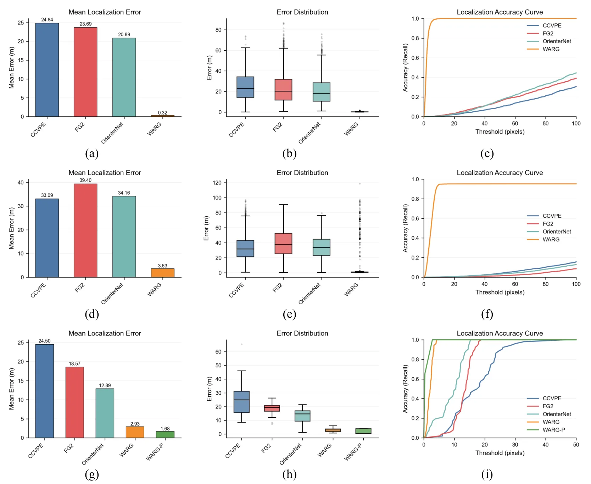
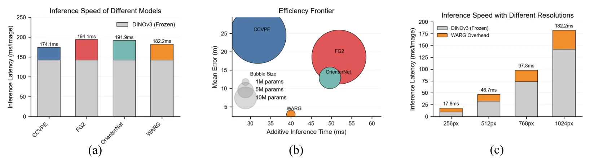
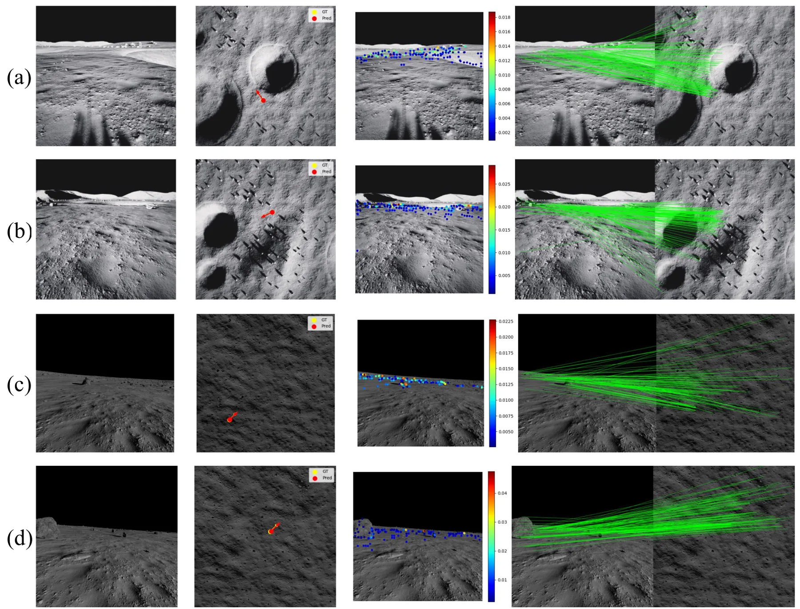
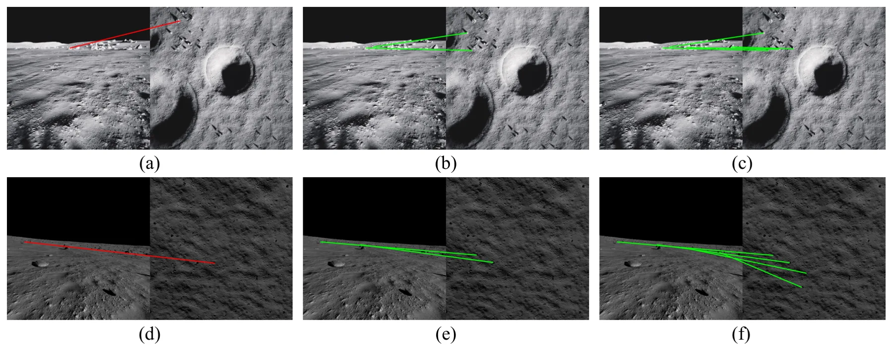
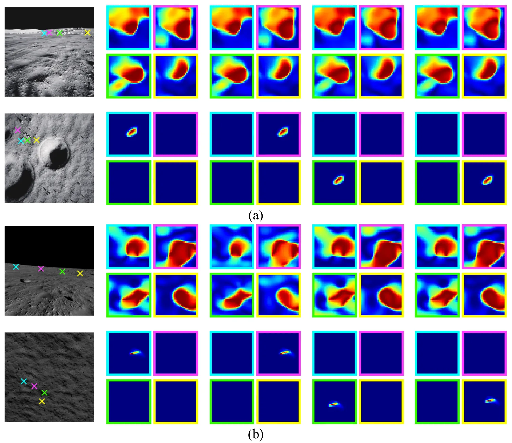

WARG：通过图对齐实现月球车像素级全局定位Globally Localizing Lunar Rover in Pixels via Graph Alignment
对 GNSS-denied cross-view localization 很有启发，且代码可用；场景特殊但可迁移到遥感辅助地面定位。
一句话工作总结
WARG 用 rover 图像与卫星/轨道图像的重投影图匹配，在无 GNSS 月面场景中实现米级全局定位。
摘要
精确 rover 定位是自主月球探索的前提，但月面没有 GNSS，局部定位方法又会累计漂移。跨视角定位通过匹配 rover-view 与 satellite-view 图像提供一种无漂移全局方案，但月面存在实体纠缠、跨视角差异和仿真到真实域偏移。本文提出 WARG（Warped Alignment of Reprojected Graphs），使用统一图学习和重投影图匹配来实现稳健跨视角对齐。在合成 LuSNAR 数据上预训练后，WARG 合成测试平均误差 0.32 m，在月南极合成区域 zero-shot 误差 3.63 m；在真实 YuTu-2 数据中，在 100 m × 100 m 搜索区域内达到 1.68 m 定位误差。模型仅 1.56M 参数，并在 RTX A6000 上达到 5.49 Hz。
Precise rover localization is a prerequisite for autonomous lunar exploration, yet the absence of Global Navigation Satellite System (GNSS) signals and the cumulative drift of local localization methods severely constrain long-range missions. Cross-view localization provides a promising drift-free global solution by matching rover-view and satellite-view imagery. However, the lunar environment poses unique challenges for correspondence alignment, including inter-entity entanglement, inter-viewpoint divergence, and simulation-to-real domain shift. To address these challenges, we propose Warped Alignment of Reprojected Graphs (WARG), a framework that leverages unified graph learning and reprojected graph matching for robust cross-view alignment. Pretrained on the synthetic LuSNAR dataset, WARG achieves an average test error of 0.32 m and demonstrates robust zero-shot generalization to the synthetic lunar south pole region with an error of 3.63 m. More importantly, when validated on real-world data from the YuTu-2 rover, WARG achieves a localization error of 1.68 m within a 100 m x 100 m search area, corresponding to nearly one-pixel precision in low-resolution satellite imagery with a spatial resolution of 1.40 m/pixel. Beyond accuracy, WARG is computationally efficient, containing only 1.56M parameters, corresponding to 16.12% of previous lightweight models, and operating at 5.49 Hz on an NVIDIA RTX A6000 GPU, approaching GNSS-level update frequency. Finally, we observe that WARG naturally develops low-level spatial awareness, including semantic segmentation and structural reasoning, through cross-view localization learning, highlighting its potential as a promising paradigm for spatial intelligence with minimal annotation cost. The source code is available at https://github.com/maochen-casia/warg.
中文解读摘录
- 作者：Ray Zhang, Marcus Greiff, Thomas Lew, John Subosits；类别：cs.CV / cs.AI / cs.RO；发布日期：2026-06-09；备注：16 pages, 12 figures；采集 score=14
- 核心问题：局部点云配准在 LiDAR/RGB-D tracking 中通常依赖 correspondences 或 ICP 类最近邻，特征稀疏、退化或外观变化时容易漂移；RKHS/CVO 类 correspondence-free 方法更稳但一阶优化速度偏慢。
- 方法亮点：把点云表示为带 point-wise anisotropic kernels 的连续函数，核函数编码局部几何，使法向方向更强约束、切向方向更宽松；优化上提出带近似 Riemannian Hessian 的二阶流形优化。
- 结果信号：相对以往一阶 RKHS 配准 solver 最高加速约 10×；在驾驶域 LiDAR tracking 的特征稀疏场景中，平移和旋转漂移均降低超过 55%；RGB-D 与物体配准 benchmark 也显示比 ICP 类方法更稳。
- 关注价值：这是今天最接近 SLAM 前端/里程计的工作。若开源或实现成本可控，值得尝试替换/增强 frame-to-frame LiDAR odometry、RGB-D odometry 和全局初始化后的精配准模块。
图表/页面预览

{kind=link}

{kind=link}

{kind=link}

{kind=link}

{kind=link}
